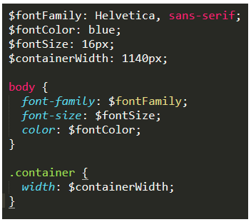
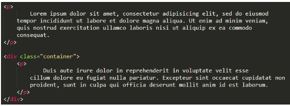
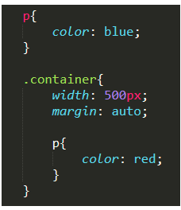
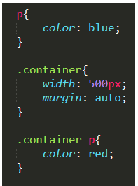
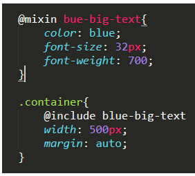
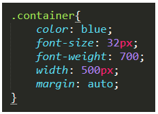

Sass é um pré-processador CSS que reduz repetições, permitindo escrever um código CSS mais curto e de forma mais rápida.
Ele permite criar variáveis, armazenar e reutilizar informações – o que ajuda muito quando, por exemplo, temos um site ou sistema em que a cor principal é #9c27b0 e queremos mudá-la. Ao invés de mudar todos os códigos #9c27b0 do site, podemos mudar só uma vez o valor da variável, e encaixar esta variável em todos os lugares que a cor for aplicada.
Como é um pré-processador, browsers não são capazes de lê-lo. Portanto, você precisa instalá-lo antes.
É um modo de armazenar informações com Sass para utilizá-las posteriormente (como no exemplo da cor principal do site dado acima). Armazenam valores como cores, fontes, medidas… Para declarar as variáveis usa-se um $ à sua frente com o valor, como no exemplo abaixo:
As variáveis funcionam apenas no nível em que estão, como neste exemplo, a não ser que sejam definidas como globais (atuando então em todos os níveis. Ex.: $color: green!global).
Vimos quando os elementos ficam “dentro” de outros (parent e child), não é? No Sass isso também acontece! No exemplo abaixo, selecionamos apenas o
do container para aplicar a cor vermelha.
No HTML estaria assim:
No Sass ficaria assim:
Traduzindo para CSS puro, ficaria assim:
Permite criar códigos CSS que podem ser reutilizados em todo o site. Exemplo:
Criamos um mixin (@mixin “nome do mixin”) com propriedades de cor, tamanho e peso da fonte. Onde colocarmos @inclue “nome do mixin”, as propriedades dentro desse mixin serão escritas. Então o container fica assim ao ser traduzido para CSS puro:
Viu como dá uma economizada?
Vale lembrar que Sass não é regra. Existem outros pré-processadores, e às vezes CSS puro também é uma boa escolha. O Sass foi feito para dar uma facilitada na vida dos desenvolvedores. Aqui você encontra a documentação Sass oficial caso se interesse em conhecer mais: https://sass-lang.com/documentation